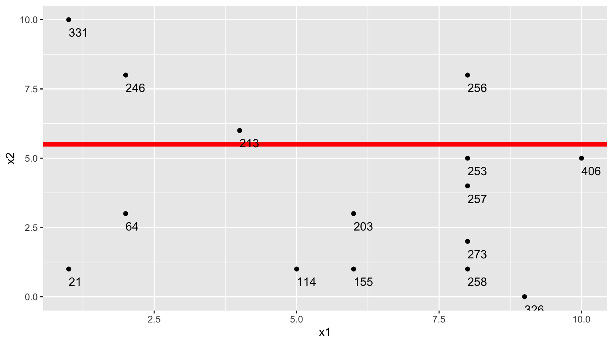

7 Predictive Modeling
Learning Outcomes
Conceptual Learning Outcomes
26. Explain how model complexity relates to training and test error, prediction variance and bias, and overfitting.
27. Explain how to use cross-validation in model selection.
28. Explain how complexity parameters associated with ridge regression, decision trees, and splines impact variance, bias, and likelihood of overfitting.
29. Make predictions from a decision tree.
30. Calculate classification accuracy, sensitivity, specificity, confusion matrix, and receiver operating characteristic curves.
31. Assess ethical considerations associated with predictive models in context.
Computational Learning Outcomes
K. Perform cross-validation to build and assess predictive models in R.
L. Make predictions on new data using predictive models in R.
7.1 Modeling for Prediction
7.1.1 Overview
We’ve previously learned how to build models for the purpose of interpretation, when our primary focus is on understanding relationships between variables in the model. In this chapter, we’ll examine how to build models for situations when we are not interested in understanding relationships between variables, and instead care only about making the most accurate predictions possible.
We’ve seen that when we model for interpretation, we encounter a tradeoff between model complexity and interpretability. We wanted to choose a model that is complex enough to reasonably approximate the structure of the underlying data, but at the same time, not so complicated that it becomes hard to interpret. When modeling for prediction, we don’t need to worry about interpretability, which can sometimes make more complex models more desirable. Nevertheless, we’ll encounter a different kind of tradeoff, involving model complexity, that we’ll have to think about, and we’ll see that more complex models do not always lead to better predictions.
Predictive Modeling Vocabulary
The new data on which we make predictions are called test data.
The data used to fit the model are called training data.
In the training data, we know the values of the explanatory and response variables. In the test data, we know only the values of the explanatory variables and want to predict the values of the response variable.
7.1.2 Illustration of Predictive Modeling
The illustration shows observations from a simulated dataset consisting of 100 observations of a single explanatory variable \(x\), and response variable \(y\). We want to find a model that captures the trend in the data and will be best able to predict new values of y, for given x.
We’ll fit several different polynomial models to the data, increasing in complexity from the most simple model we could possibly use, a constant model, to a very complex eighth degree polynomial model.
Constant Model to Sample Data

The plot below shows models of degree 0, 1, 3, and 7 fit to the training data on the same plot.

We see that the flexibility of the model increases as we add higher-order terms. The curve is allowed to have more twists and bends. For higher-order, more complex models, individual points have more influence on the shape of the curve. This can be both a good and bad thing, as it allows the model to better bend and fit the data, but also makes it susceptible to the influence of outliers.
7.1.3 Predicting New Data
Now, suppose we have a new dataset of 100 x-values, and want to predict \(y\). The new data are shown below.

We fit polynomial models of degree 0 through 8 to the data.
Sim_M0 <-lm(data=Sampdf, y~1)
Sim_M1 <-lm(data=Sampdf, y~x)
Sim_M2 <- lm(data=Sampdf, y~x+I(x^2))
Sim_M3 <- lm(data=Sampdf, y~x+I(x^2)+I(x^3))
Sim_M4 <- lm(data=Sampdf, y~x+I(x^2)+I(x^3)+I(x^4))
Sim_M5 <- lm(data=Sampdf, y~x+I(x^2)+I(x^3)+I(x^4)+I(x^5))
Sim_M6 <- lm(data=Sampdf, y~x+I(x^2)+I(x^3)+I(x^4)+I(x^5)+I(x^6))
Sim_M7 <- lm(data=Sampdf, y~x+I(x^2)+I(x^3)+I(x^4)+I(x^5)+I(x^6)+I(x^7))
Sim_M8 <- lm(data=Sampdf, y~x+I(x^2)+I(x^3)+I(x^4)+I(x^5)+I(x^6)+I(x^7)+I(x^8))We plot models 0, 1, 3, and 7 and see which best fits the data.

Notice that while there were some high y-values on around x=1 in the training data, which pulled model 7 upward in that region, these values are not present in the new data. Model M7 appears to overpredict most of the y-values in this region. It appears that the behavior in the training data close to \(x=1\) was due more to noise than signal, and the more flexible model suffers because it responds too aggressively to the noise.
We predict the values of the new observations, using each of the 9 models.
Newdf$Deg0Pred <- predict(Sim_M0, newdata=Newdf)
Newdf$Deg1Pred <- predict(Sim_M1, newdata=Newdf)
Newdf$Deg2Pred <- predict(Sim_M2, newdata=Newdf)
Newdf$Deg3Pred <- predict(Sim_M3, newdata=Newdf)
Newdf$Deg4Pred <- predict(Sim_M4, newdata=Newdf)
Newdf$Deg5Pred <- predict(Sim_M5, newdata=Newdf)
Newdf$Deg6Pred <- predict(Sim_M6, newdata=Newdf)
Newdf$Deg7Pred <- predict(Sim_M7, newdata=Newdf)
Newdf$Deg8Pred <- predict(Sim_M8, newdata=Newdf)In fact, since these data were simulated, we know the true value of \(y\), so we can compare the predicted values to the true ones.
print(Newdf %>% dplyr::select(-c(samp)) %>% round(1) %>% head(5)) x y Deg0Pred Deg1Pred Deg2Pred Deg3Pred Deg4Pred Deg5Pred Deg6Pred
108 5.5 5.5 1.2 1.1 0.4 -0.1 -0.3 0.1 0.4
4371 2.1 3.9 1.2 1.9 2.0 3.7 3.9 4.3 3.8
4839 3.2 1.5 1.2 1.6 1.3 3.2 3.4 2.8 2.2
6907 2.1 6.8 1.2 1.9 2.0 3.7 4.0 4.2 3.8
7334 2.9 -1.0 1.2 1.7 1.4 3.4 3.6 3.1 2.5
Deg7Pred Deg8Pred
108 0.3 0.3
4371 3.4 3.5
4839 2.2 2.1
6907 3.4 3.5
7334 2.3 2.27.1.4 Prediction Error
For quantitative response variables, we can evaluate the predictions by calculating the average of the squared differences between the true and predicted values. Often, we look at the square root of this quantity. This is called the Root Mean Square Prediction Error (RMSPE).
\[ \text{RMSPE} = \sqrt{\displaystyle\sum_{i=1}^{n'}\frac{(y_i-\hat{y}_i)^2}{n'}}, \]
where \(n'\) represents the number of new cases being predicted.
We calculate RMSPE for each of the 9 models.
RMSPE0 <- sqrt(mean((Newdf$y-Newdf$Deg0Pred)^2))
RMSPE1 <- sqrt(mean((Newdf$y-Newdf$Deg1Pred)^2))
RMSPE2 <- sqrt(mean((Newdf$y-Newdf$Deg2Pred)^2))
RMSPE3 <- sqrt(mean((Newdf$y-Newdf$Deg3Pred)^2))
RMSPE4 <- sqrt(mean((Newdf$y-Newdf$Deg4Pred)^2))
RMSPE5 <- sqrt(mean((Newdf$y-Newdf$Deg5Pred)^2))
RMSPE6 <- sqrt(mean((Newdf$y-Newdf$Deg6Pred)^2))
RMSPE7 <- sqrt(mean((Newdf$y-Newdf$Deg7Pred)^2))
RMSPE8 <- sqrt(mean((Newdf$y-Newdf$Deg8Pred)^2))| Degree | RMSPE |
|---|---|
| 0 | 4.05 |
| 1 | 3.85 |
| 2 | 3.73 |
| 3 | 3.26 |
| 4 | 3.28 |
| 5 | 3.34 |
| 6 | 3.35 |
| 7 | 3.37 |
| 8 | 3.35 |
The third degree model did the best at predicting the new data.
Notice that making the model more complex beyond third degree not only didn’t help, but actually hurt prediction accuracy.
Now, let’s examine the behavior if we had fit the models to the data, instead of the test data.
RMSE0 <- sqrt(mean(Sim_M0$residuals^2))
RMSE1 <- sqrt(mean(Sim_M1$residuals^2))
RMSE2 <- sqrt(mean(Sim_M2$residuals^2))
RMSE3 <- sqrt(mean(Sim_M3$residuals^2))
RMSE4 <- sqrt(mean(Sim_M4$residuals^2))
RMSE5 <- sqrt(mean(Sim_M5$residuals^2))
RMSE6 <- sqrt(mean(Sim_M6$residuals^2))
RMSE7 <- sqrt(mean(Sim_M7$residuals^2))
RMSE8 <- sqrt(mean(Sim_M8$residuals^2))| Degree | RMSE |
|---|---|
| 0 | 3.43 |
| 1 | 3.37 |
| 2 | 3.30 |
| 3 | 2.91 |
| 4 | 2.91 |
| 5 | 2.84 |
| 6 | 2.81 |
| 7 | 2.80 |
| 8 | 2.80 |
Degree <- 0:8
Test_Error <- c(RMSPE0, RMSPE1, RMSPE2, RMSPE3, RMSPE4, RMSPE5, RMSPE6, RMSPE7, RMSPE8)|> round(2)
Train_Error <- c(RMSE0, RMSE1, RMSE2, RMSE3, RMSE4, RMSE5, RMSE6, RMSE7, RMSE8) |> round(2)
RMSPEdf <- data.frame(Degree, Train_Error, Test_Error)
RMSPEdf Degree Train_Error Test_Error
1 0 3.43 4.05
2 1 3.37 3.85
3 2 3.30 3.73
4 3 2.91 3.26
5 4 2.91 3.28
6 5 2.84 3.34
7 6 2.81 3.35
8 7 2.80 3.37
9 8 2.80 3.35Notice that the most complex model achieves the best performance on the training data, but not on the test data.
As the model complexity grows, the model will always fit the training data better, but that does not mean it will perform better on new data. It is possible to start modeling noise, rather than true signal in the training data, which hurts the accuracy of the model when applied to new data.

- Training error decreases as model becomes more complex
- Testing error is lowest for the 3rd degree model, then starts to increase again
Of the models we looked at, the third degree model does the best. The estimates of its coefficients are shown below.
Sim_M3
Call:
lm(formula = y ~ x + I(x^2) + I(x^3), data = Sampdf)
Coefficients:
(Intercept) x I(x^2) I(x^3)
-0.54165 4.16638 -1.20601 0.08419 In fact, the data were generated from the model \(y_i = 0 + 4.5x - 1.4x^2 + 0.1x^3 + \epsilon_i\), where \(\epsilon_i\sim\mathcal{N}(0,3)\)
The graph below shows the 100 points in our sample in green and the population of points that could have come from this equation in red.
We compare the true expected response curve (in yellow) to the estimated curve in blue. We see that they are not identical, but close.
7.1.5 Variance Bias Tradeoff
As we make a model more complex (such as by adding more variables or higher order polynomial terms), it will always fit the training data better. However, at some point, it will begin to model random noise, rather than true signal in the training data, and thus will perform worse on new data. This is called overfitting.

Suppose \(Y_i = f(x_i) + \epsilon_i\), where \(\epsilon_i\sim\mathcal{N}(0,\sigma)\).
Let \(\hat{f}\) represent the function of our explanatory variable(s) \(x^*\) used to predict the value of response variable \(y^*\). Thus \(\hat{y}^* = f(x^*)\).
Prediction error is given by \(\left(y^* - \hat{y}\right)^2 = \left(y^* - \hat{f}(x^*)\right)^2\).
There are three factors that contribute to prediction error RMSPE.
Model Bias - Our model might not be complex enough to capture the true relationship between the response and explanatory variable(s). For example, if we use a linear or quadratic model when the true relationship is cubic, our predictions will suffer from model bias. Model bias pertains to the difference between the true response function value \(f(x^*)\), and the expected value of \(\hat{f}(x^*)\) that would be obtained in the long run over many samples.
Model Variance - Individual observations in the training data are subject to random sampling variability. As model complexity increases, it becomes more flexible and prone to being pulled away from the true relationship because of outliers in the training data.
Prediction Variance - Even if two observations have the same value(s) for every explanatory variable, they will usually have different response values, due to random noise (i.e. the \(\epsilon_i\sim\mathcal{N}(0,\sigma)\) term). So, even if we really knew the relationship between the response and explanatory variable(s), we would still not get every prediction exactly correct.
We cannot do anything about prediction variance, but we can try to control model bias and variance through our choice of model. If we could figure out how to minimize bias while also minimizing variance associated with a prediction, that would be great! Unfortunately, this is not possible. As model complexity (flexibility) increases, bias decreases. Variance, however, increases. Thus, we cannot make both of these smallest at the same time. Instead, the goal will be to find a model that is complex enough to keep bias fairly low, while not so complex that variability gets too big.
In fact, it can be shown that:
\(\text{Expected RMSPE} = \text{Variance} + \text{Bias}^2\)
Our goal is the find the “sweetspot” where expected prediction error is minimized.

7.2 Cross-Validation
7.2.1 Cross-Validation Illustration
We’ve seen that training error is not an accurate approximation of test error. Instead, we’ll approximate test error, by setting aside a set of the training data, and using it as if it were a test set. This process is called cross-validation, and the set we put aside is called the validation set.
- Partition data into disjoint sets (folds). Approximately 5 folds recommended.
- Build a model using 4 of the 5 folds.
- Use model to predict responses for remaining fold.
- Calculate root mean square error \(RMSPE=\displaystyle\sqrt{\frac{\sum((\hat{y}_i-y_i)^2)}{n'}}\).
- Repeat for each of 5 folds.
- Average RMSPE values across folds.
If computational resources permit, it is often beneficial to perform CV multiple times, using different sets of folds.

7.2.2 Ames Housing Data
We’ll use it to compare five different models for house prices among a dataset of 1,000 houses sold in Ames, IA between 2006 and 2010. We have data on 25 different explanatory variables.
This is actually a subset of a larger dataset available in the Ames Housing R package.
library(tidyverse)
#library(AmesHousing)
#data("ames_raw")
Ames_Train <- read_csv("Ames_Train_Data.csv") # Load data
library(caret) # load caret packagelibrary(AmesHousing)
data("ames_raw")
ames_raw <- as.data.frame(ames_raw)
ames_raw <- ames_raw %>% mutate_if(is.character,as.factor)
Ames_Num <- select_if(ames_raw, is.numeric)
ames_raw <- ames_raw[complete.cases(Ames_Num),]
ames_raw <- ames_raw %>% mutate_if(is.character, addNA)
ames_raw <- ames_raw %>% mutate_if(is.factor, addNA)
ames_raw$PID <- as.numeric(ames_raw$PID)
ames_raw <- ames_raw %>% select( `Overall Qual`, `Year Built`, `Mas Vnr Area`, `Central Air`, `Gr Liv Area`, `Lot Frontage`, `1st Flr SF`, `Bedroom AbvGr`, `TotRms AbvGrd`, everything())
ames_raw <- ames_raw %>% select(-c(Utilities, `Exterior 2nd`, `Bldg Type`, `Bsmt Cond`, `BsmtFin Type 1`, `Low Qual Fin SF`, `Total Bsmt SF`, `BsmtFin Type 2`, `Bsmt Cond`, `Exterior 1st`, `House Style`))
ames_raw <- ames_raw |> mutate_if(is.factor, droplevels)
set.seed(10302021)
samp <- sample(1:nrow(ames_raw))
Ames_Train <- ames_raw[samp[1:1000],]
Ames_Test <- ames_raw[samp[1001:2000],]
Ames_Train <- Ames_Train |> mutate_if(is.factor, droplevels)
Ames_Test <- Ames_Test |> mutate_if(is.factor, droplevels)head(Ames_Train) Overall Qual Year Built Mas Vnr Area Central Air Gr Liv Area Lot Frontage
859 5 1972 0 Y 864 36
1850 7 1997 1600 Y 1950 66
1301 5 1948 0 Y 1122 100
981 5 1972 0 Y 796 50
2694 6 1937 0 Y 1376 50
2209 5 1938 0 Y 954 50
1st Flr SF Bedroom AbvGr TotRms AbvGrd Order PID MS SubClass MS Zoning
859 864 3 5 859 2256 020 RL
1850 975 3 7 1850 976 060 FV
1301 1122 2 6 1301 1572 020 RM
981 796 2 4 981 2891 085 RL
2694 780 3 7 2694 1805 050 RM
2209 954 2 5 2209 2561 030 RL
Lot Area Street Alley Lot Shape Land Contour Lot Config Land Slope
859 15523 Pave <NA> IR1 Lvl CulDSac Gtl
1850 7399 Pave Pave IR1 Lvl Inside Gtl
1301 12000 Pave <NA> Reg Lvl Inside Gtl
981 7689 Pave <NA> IR1 Lvl Inside Gtl
2694 8600 Pave <NA> Reg Bnk Inside Gtl
2209 6305 Pave <NA> Reg Bnk Inside Gtl
Neighborhood Condition 1 Condition 2 Overall Cond Year Remod/Add
859 CollgCr Norm Norm 6 1972
1850 Somerst Norm Norm 5 1998
1301 OldTown Norm Norm 7 2005
981 Mitchel Norm Norm 8 1972
2694 IDOTRR Norm Norm 6 1950
2209 Crawfor Norm Norm 7 1950
Roof Style Roof Matl Mas Vnr Type Exter Qual Exter Cond Foundation
859 Gable CompShg None TA TA CBlock
1850 Hip CompShg BrkFace Gd TA PConc
1301 Gable CompShg None TA TA CBlock
981 Gable CompShg None TA TA CBlock
2694 Gable CompShg None TA TA BrkTil
2209 Gable CompShg None TA Gd PConc
Bsmt Qual Bsmt Exposure BsmtFin SF 1 BsmtFin SF 2 Bsmt Unf SF Heating
859 TA Av 460 0 404 GasA
1850 Gd No 649 0 326 GasA
1301 TA No 144 608 172 GasA
981 Gd Av 720 76 0 GasA
2694 TA No 0 0 780 GasA
2209 Fa No 0 0 920 GasA
Heating QC Electrical 2nd Flr SF Bsmt Full Bath Bsmt Half Bath Full Bath
859 Ex SBrkr 0 1 0 1
1850 Ex SBrkr 975 0 0 2
1301 Ex SBrkr 0 1 0 1
981 Gd SBrkr 0 0 1 1
2694 TA SBrkr 596 0 0 2
2209 Ex SBrkr 0 0 0 1
Half Bath Kitchen AbvGr Kitchen Qual Functional Fireplaces Fireplace Qu
859 0 1 TA Typ 1 Fa
1850 1 1 Gd Typ 1 TA
1301 0 1 Gd Typ 0 <NA>
981 0 1 TA Typ 0 <NA>
2694 0 1 TA Typ 1 Gd
2209 0 1 Fa Typ 1 Gd
Garage Type Garage Yr Blt Garage Finish Garage Cars Garage Area
859 Attchd 1972 Unf 1 338
1850 Detchd 1997 RFn 2 576
1301 Attchd 1948 Unf 2 528
981 Detchd 1998 Unf 1 336
2694 Detchd 1937 Unf 1 198
2209 Basment 1938 Unf 1 240
Garage Qual Garage Cond Paved Drive Wood Deck SF Open Porch SF
859 TA TA Y 0 0
1850 TA TA Y 0 10
1301 TA TA Y 0 36
981 TA TA Y 138 0
2694 TA TA N 0 0
2209 Fa TA Y 0 0
Enclosed Porch 3Ssn Porch Screen Porch Pool Area Pool QC Fence
859 0 0 0 0 <NA> <NA>
1850 0 0 198 0 <NA> <NA>
1301 0 0 0 0 <NA> GdWo
981 0 0 0 0 <NA> MnPrv
2694 0 0 0 0 <NA> <NA>
2209 0 0 0 0 <NA> MnPrv
Misc Feature Misc Val Mo Sold Yr Sold Sale Type Sale Condition SalePrice
859 <NA> 0 8 2009 WD Normal 133500
1850 <NA> 0 6 2007 WD Normal 239000
1301 <NA> 0 5 2008 WD Normal 147000
981 <NA> 0 7 2009 WD Normal 131900
2694 <NA> 0 6 2006 WD Normal 119500
2209 <NA> 0 6 2007 WD Normal 1197507.2.3 Cross-Validation with caret
The train function in the caret R package performs cross validation automatically. number represents the number of folds, and repeats is the number of repetitions.
We’ll consider six different models of increasing complexity.
library(caret)
# set cross-validation settings - use 10 repeats of 10-fold CV
control <- trainControl(method="repeatedcv", number=10, repeats=10, savePredictions = "all" )
# define models
# set same random seed before each model to ensure same partitions are used in CV, making them comparable
set.seed(10302023)
model1 <- train(data=Ames_Train,
SalePrice ~ `Overall Qual` ,
method="lm", trControl=control)
set.seed(10302023)
model2 <- train(data=Ames_Train,
SalePrice ~ `Overall Qual` + `Gr Liv Area` + `Garage Area`,
method="lm", trControl=control)
set.seed(10302023)
model3 <- train(data=Ames_Train, SalePrice ~ `Overall Qual` +
`Gr Liv Area` + `Garage Area` +
`Neighborhood` + `Year Built`,
method="lm", trControl=control)
set.seed(10302023)
model4 <- train(data=Ames_Train, SalePrice ~ `Overall Qual`
+ `Gr Liv Area` + `Garage Area`
+ `Neighborhood` + `Year Built`
+ `Lot Shape` + `Land Contour` + `Land Slope`,
method="lm", trControl=control)
set.seed(10302023)
model5 <- train(data=Ames_Train, SalePrice ~ `Overall Qual`
+ `Gr Liv Area` + `Garage Area`
+ `Neighborhood` + `Year Built`
+ `Lot Shape` + `Land Contour` + `Land Slope` +
+ `Order` + `PID` ,
method="lm", trControl=control)
set.seed(10302023)
model6 <- train(data=Ames_Train, SalePrice ~ ., method="lm", trControl=control) # include everything linearlyCross validation root mean square error is shown below. This is an estimate of the root mean square prediction error we would see when making predictions on new data.
# Calculate RMSPE for each model
CVRMSE1 <- sqrt(mean((model1$pred$obs-model1$pred$pred)^2))
CVRMSE2 <- sqrt(mean((model2$pred$obs-model2$pred$pred)^2))
CVRMSE3 <- sqrt(mean((model3$pred$obs-model3$pred$pred)^2))
CVRMSE4 <- sqrt(mean((model4$pred$obs-model4$pred$pred)^2))
CVRMSE5 <- sqrt(mean((model5$pred$obs-model5$pred$pred)^2))
CVRMSE6 <- sqrt(mean((model6$pred$obs-model6$pred$pred)^2))
CVRMSE1[1] 49605.77CVRMSE2[1] 43333.4CVRMSE3[1] 39057.19CVRMSE4[1] 39287.21CVRMSE5[1] 39340.58CVRMSE6[1] 53849.8We see that in this case, Model 3 performed the best on the validation data. Adding variables like lot shape, land contour, and land slope did not help with predictions, and actually cause the model to overfit and perform worse. We should use Model 3 to make predictions on new data over the other models seen here. It is likely that there are better models out there than Model 3, likely with complexity somewhere between that of Model 3 and Models 5-6. Perhaps you can find one.
Once we have our preferred model, we can read in our test data and make predictions, and display the first 10 predicted values.
Ames_Test <- read_csv("Ames_Test_Data.csv")The first ten rows of the test data are shown below.
head(Ames_Test, 10)# A tibble: 10 × 25
PID `MS SubClass` `Lot Frontage` `Lot Area` `Lot Shape` `Land Contour`
<dbl> <dbl> <dbl> <dbl> <chr> <chr>
1 1659 30 90 8100 Reg Lvl
2 677 20 49 15256 IR1 Lvl
3 1976 20 82 20270 IR1 Lvl
4 42 60 50 13128 IR1 HLS
5 1442 20 60 7200 Reg Lvl
6 1782 70 57 8094 Reg Lvl
7 2389 85 75 9825 Reg Low
8 1657 70 60 11340 Reg Lvl
9 401 60 82 9709 IR1 Lvl
10 2571 50 66 21780 Reg Lvl
# ℹ 19 more variables: Neighborhood <chr>, `Bldg Type` <chr>,
# `Overall Qual` <dbl>, `Overall Cond` <dbl>, `Year Built` <dbl>,
# `Year Remod/Add` <dbl>, `Total Bsmt SF` <dbl>, `Central Air` <chr>,
# `1st Flr SF` <dbl>, `2nd Flr SF` <dbl>, `Gr Liv Area` <dbl>,
# `Full Bath` <dbl>, `TotRms AbvGrd` <dbl>, Fireplaces <dbl>,
# `Garage Cars` <dbl>, `Garage Area` <dbl>, `Mo Sold` <dbl>, `Yr Sold` <dbl>,
# SalePrice <lgl>We use Model 3 to predict the prices of the new houses. The first 10 predictions are shown below.
predictions <- predict(model3, newdata=Ames_Test) # substitute your best model
head(data.frame(predictions), 10) predictions
1 155806.18
2 245394.28
3 238933.54
4 243591.93
5 115427.13
6 162572.07
7 106909.10
8 47830.52
9 331618.06
10 179100.12A quick look at the data reveals that the one predicted to be most expensive was House #9, which was a newer house built in 2007, and was the biggest and one of the highest overall quality houses among the 10.
We create a csv file containing the predictions, using the code below.
write.csv(predictions, file = "predictions.csv")7.3 Ridge Regression
7.3.1 Complexity in Model Coefficients
We’ve thought about complexity in terms of the number of terms we include in a model, as well as whether we include quadratic terms and higher order terms and interactions. We can also think about model complexity in terms of the coefficients \(b_1, \ldots, b_p\). Larger values of \(b_1, \ldots, b_p\) are associated with more complex models. Smaller values of \(b_1, \ldots, b_p\) are associated with less complex models. When \(b_j=0\), this mean variable \(j\) is not used in the model.
To illustrate, we fit a regression model to the Ames housing dataset, which includes 24 possible explanatory variables, in addition to price.
We’ll begin by standardizing all variables in the dataset using the scale command. This involves subtracting the mean and dividing by the standard deviation. Standardizing ensures that all variables are on the same scale. If we didn’t do this, then the weight given to each variable might differ depending on its units of measure.
Ames_Train_sc <- Ames_Train |> mutate_if(is.numeric, scale) The full list of coefficient estimates is shown below.
M_OLS <- lm(data=Ames_Train_sc, SalePrice ~ .)
M_OLS$coefficients (Intercept) `Overall Qual` `Year Built`
-13.59130882125 0.12172875370 0.18710242157
`Mas Vnr Area` `Central Air`Y `Gr Liv Area`
0.08021260696 -0.04619169355 0.23762329102
`Lot Frontage` `1st Flr SF` `Bedroom AbvGr`
-0.00429094489 0.06991064978 -0.02245793663
`TotRms AbvGrd` Order PID
0.01757415312 0.09500860850 0.00814856877
`MS SubClass`030 `MS SubClass`040 `MS SubClass`045
0.02155059515 0.07236147708 0.08858457552
`MS SubClass`050 `MS SubClass`060 `MS SubClass`070
-0.01640305733 -0.09127505556 -0.01176201580
`MS SubClass`075 `MS SubClass`080 `MS SubClass`085
-0.13055431025 -0.08036368019 -0.08050060537
`MS SubClass`090 `MS SubClass`120 `MS SubClass`160
-0.26998526617 -0.25031708359 -0.42965417371
`MS SubClass`180 `MS SubClass`190 `MS Zoning`C (all)
-0.23213470433 -0.15319391551 -0.47834524646
`MS Zoning`FV `MS Zoning`I (all) `MS Zoning`RH
-0.28507463985 -0.21229264775 -0.16410610735
`MS Zoning`RL `MS Zoning`RM `Lot Area`
-0.21759850136 -0.30565512401 0.07285454709
StreetPave AlleyPave AlleyNA
0.45956145163 0.03116785010 0.00035798897
`Lot Shape`IR2 `Lot Shape`IR3 `Lot Shape`Reg
0.10576302368 0.12823643814 0.03300652196
`Land Contour`HLS `Land Contour`Low `Land Contour`Lvl
0.13958728988 -0.27690361930 0.15084179216
`Lot Config`CulDSac `Lot Config`FR2 `Lot Config`FR3
0.12860460385 -0.15191268632 -0.17953546763
`Lot Config`Inside `Land Slope`Mod `Land Slope`Sev
-0.01440783225 0.13011816970 -0.29862915223
NeighborhoodBlueste NeighborhoodBrDale NeighborhoodBrkSide
0.23434173527 0.25354320980 0.17654221032
NeighborhoodClearCr NeighborhoodCollgCr NeighborhoodCrawfor
0.09100974262 -0.00057509876 0.35488850236
NeighborhoodEdwards NeighborhoodGilbert NeighborhoodGreens
-0.09239036865 0.02406940481 0.05756764076
NeighborhoodIDOTRR NeighborhoodMeadowV NeighborhoodMitchel
0.15383179212 0.23298493233 -0.11438052494
NeighborhoodNAmes NeighborhoodNoRidge NeighborhoodNPkVill
0.02197635792 0.39600745608 0.24174493098
NeighborhoodNridgHt NeighborhoodNWAmes NeighborhoodOldTown
0.42434522209 -0.04153578370 0.12156771029
NeighborhoodSawyer NeighborhoodSawyerW NeighborhoodSomerst
0.08339168198 0.04866431880 0.25224969818
NeighborhoodStoneBr NeighborhoodSWISU NeighborhoodTimber
0.54951171242 0.10506427869 0.01795586846
NeighborhoodVeenker `Condition 1`Feedr `Condition 1`Norm
0.07103275546 -0.00389153252 0.12384803301
`Condition 1`PosA `Condition 1`PosN `Condition 1`RRAe
0.61047137485 0.19577375822 -0.14305492898
`Condition 1`RRAn `Condition 1`RRNn `Condition 2`Feedr
0.09735755018 0.07455474531 0.09422184185
`Condition 2`Norm `Condition 2`PosA `Condition 2`PosN
0.08392208658 0.01845182052 -2.77118265740
`Condition 2`RRNn `Overall Cond` `Year Remod/Add`
0.25685094522 0.07395388864 0.03009699255
`Roof Style`Gable `Roof Style`Gambrel `Roof Style`Hip
-0.01212949831 -0.04656300430 -0.01259174339
`Roof Style`Mansard `Roof Style`Shed `Roof Matl`CompShg
0.23077338051 -0.11780553549 8.27597326004
`Roof Matl`Membran `Roof Matl`Tar&Grv `Roof Matl`WdShngl
9.10486598342 8.05640391369 9.34788521212
`Mas Vnr Type`BrkFace `Mas Vnr Type`None `Mas Vnr Type`Stone
-0.17632717617 -0.06386385349 -0.14509043700
`Exter Qual`Fa `Exter Qual`Gd `Exter Qual`TA
-0.27013813954 -0.46168757537 -0.49820871424
`Exter Cond`Fa `Exter Cond`Gd `Exter Cond`Po
-0.03082238434 0.11871185662 -0.11211143073
`Exter Cond`TA FoundationCBlock FoundationPConc
0.13537361237 0.02635149973 0.05354235814
FoundationSlab FoundationStone FoundationWood
-0.09880253750 0.06424781234 -0.26515863060
`Bsmt Qual`Fa `Bsmt Qual`Gd `Bsmt Qual`Po
-0.23578437965 -0.16449941673 0.72119653468
`Bsmt Qual`TA `Bsmt Qual`NA `Bsmt Exposure`Gd
-0.18381997798 0.36058921359 0.10416303942
`Bsmt Exposure`Mn `Bsmt Exposure`No `Bsmt Exposure`NA
-0.06951087282 -0.07062963631 -0.34886062368
`BsmtFin SF 1` `BsmtFin SF 2` `Bsmt Unf SF`
0.20674038443 0.04997252798 0.07271883848
HeatingGasW HeatingWall `Heating QC`Fa
0.04383900333 0.20322162437 -0.08974832333
`Heating QC`Gd `Heating QC`Po `Heating QC`TA
-0.00937967426 -0.22178284792 -0.07042513045
ElectricalFuseF ElectricalFuseP ElectricalMix
0.00898381678 0.31259189683 0.63780393390
ElectricalSBrkr `2nd Flr SF` `Bsmt Full Bath`
-0.03542484148 0.06406031762 -0.00322398443
`Bsmt Half Bath` `Full Bath` `Half Bath`
0.00838482813 0.02519505108 0.02015786337
`Kitchen AbvGr` `Kitchen Qual`Fa `Kitchen Qual`Gd
-0.03349189241 -0.09607308952 -0.16716388306
`Kitchen Qual`TA FunctionalMaj2 FunctionalMin1
-0.16401133535 -0.30302784752 -0.10685732156
FunctionalMin2 FunctionalMod FunctionalTyp
-0.15674128599 -0.17753056314 0.05187402523
Fireplaces `Fireplace Qu`Fa `Fireplace Qu`Gd
0.09346633107 -0.15744505091 -0.17518128333
`Fireplace Qu`Po `Fireplace Qu`TA `Fireplace Qu`NA
-0.28539807056 -0.21810062721 -0.06851015534
`Garage Type`Attchd `Garage Type`Basment `Garage Type`BuiltIn
-0.01354841109 -0.00861375121 -0.05669345934
`Garage Type`CarPort `Garage Type`Detchd `Garage Yr Blt`
-0.12923248607 -0.00171401502 -0.01955800208
`Garage Finish`RFn `Garage Finish`Unf `Garage Cars`
-0.05356568330 -0.01828384382 0.02471914400
`Garage Area` `Garage Qual`Fa `Garage Qual`Gd
0.06042408704 -0.86850349015 -0.63039690210
`Garage Qual`Po `Garage Qual`TA `Garage Cond`Fa
-1.65328010914 -0.83578836183 0.91247325140
`Garage Cond`Gd `Garage Cond`Po `Garage Cond`TA
0.79060216838 1.39008604944 0.87884284151
`Paved Drive`P `Paved Drive`Y `Wood Deck SF`
0.06483515908 0.02561801326 0.01158689081
`Open Porch SF` `Enclosed Porch` `3Ssn Porch`
-0.01299180889 -0.00928427635 0.00590680860
`Screen Porch` `Pool Area` `Pool QC`TA
0.02956291048 -0.04923465233 0.30278881156
`Pool QC`NA FenceGdWo FenceMnPrv
-1.24145842019 0.00004591047 0.01932880459
FenceMnWw FenceNA `Misc Feature`Gar2
-0.01085804835 0.01599859694 6.72349662646
`Misc Feature`Othr `Misc Feature`Shed `Misc Feature`NA
7.02488714846 6.80128988914 6.75717447918
`Misc Val` `Mo Sold` `Yr Sold`
0.01467591793 -0.00862316912 0.09610313650
`Sale Type`Con `Sale Type`ConLD `Sale Type`ConLI
0.09849131799 0.29564887816 0.11747454409
`Sale Type`ConLw `Sale Type`CWD `Sale Type`New
0.13635880661 -0.11779397614 0.28511673010
`Sale Type`Oth `Sale Type`VWD `Sale Type`WD
0.49002891445 -0.14466277644 0.05944448834
`Sale Condition`AdjLand `Sale Condition`Alloca `Sale Condition`Family
0.50907010355 0.30168612306 0.00499302864
`Sale Condition`Normal `Sale Condition`Partial
0.01963743062 -0.05724696756 Let’s focus on the first 10 rows.
head(coef(M_OLS),10) %>% round(3) (Intercept) `Overall Qual` `Year Built` `Mas Vnr Area` `Central Air`Y
-13.591 0.122 0.187 0.080 -0.046
`Gr Liv Area` `Lot Frontage` `1st Flr SF` `Bedroom AbvGr` `TotRms AbvGrd`
0.238 -0.004 0.070 -0.022 0.018 If all coefficients in the model were 0, then we would be using the most simple constant model, and the prediction for the price of each house would be exactly the same as the overall mean. As \(b_j's\) get farther from 0, predictions begin move away from the overall mean and depend more and more on the values or categories of the explanatory variable(s) associated with individual houses. This creates a risk, however, of overfitting.
A way to combat this, other than dropping variables from the model, is to shrink some or all of the regression coefficients closer to 0, pushing predictions closer to the overall mean.
A statistical technique for doing this is called ridge regression.
7.3.2 Ridge Regression Penalty
We’ve seen that in ordinary least-squares regression, \(b_0, b_1, \ldots, b_p\) are chosen in a way that to minimizes
\[ \displaystyle\sum_{i=1}^n (y_i -\hat{y}i)^2 =\displaystyle\sum_{i=1}^{n} (y_i -(b_0 + b_1x{i1} + b_2{x_i2} + \ldots +b_px\_{ip}))^2 \]
When \(p\) is large and we want to be careful of overfitting, a common approach is to add a “penalty term” to this function, to incentive choosing values of \(b_1, \ldots, b_p\) that are closer to 0, thereby “shrinking” the predictions toward the overall mean house price.
Specifically, we minimize:
\[ \begin{aligned} & \displaystyle\sum_{i=1}^n (y_i -\hat{y}_i)^2 + \lambda\displaystyle\sum_{j=1}^pb_j^2\\ = & \displaystyle\sum_{i=1}^n (y_i -(b_0 + b_1x_{i1} + b_2x_{i2} + \ldots + b_px_{ip}))^2 + \lambda\displaystyle\sum_{j=1}^pb_j^2 \end{aligned} \]
where \(\lambda\) is a pre-determined positive constant.
Larger values of \(b_j\) typically help the model better fit the training data, thereby making the first term smaller, but also make the second term larger. The idea is the find optimal values of \(b_0, b_1, \ldots, b_p\) that are large enough to allow the model to fit the data well, thus keeping the first term (SSR) small, while also keeping the penalty term small as well.
7.3.3 Choosing \(\lambda\)
The value of \(\lambda\) is predetermined by the user. The larger the value of \(\lambda\), the more heavily large \(b_j's\) are penalized. A value of \(\lambda=0\) corresponds to ordinary least-squares.
\[ \begin{aligned} Q=& \displaystyle\sum_{i=1}^n (y_i -\hat{y}_i)^2 + \lambda\displaystyle\sum_{j=1}^pb_j^2\\ = & \displaystyle\sum_{i=1}^n (y_i -(b_0 + b_1x_{i1} + b_2x_{i2} + \ldots + b_px_{ip}))^2 + \lambda\displaystyle\sum_{j=1}^pb_j^2 \end{aligned} \]
- Small values of \(\lambda\) lead to more complex models, with larger \(|b_j|\)’s.
- As \(\lambda\) increases, \(|b_j|\)’s shrink toward 0. The model becomes less complex, thus bias increases, but variance decreases.
- We can use cross validation to determine the optimal value of \(\lambda\)

When using ridge regression, it is important to standardize each explanatory variable (i.e. subtract the mean and divide by the standard deviation). This ensures each variable has mean 0 and standard deviation 1. Without standardizing the optimal choice of \(b_j\)’s would depend on scale, with variables with larger absolute measurements having more influence. We’ll standardize the response variable too. Though this is not strictly necessary, it doesn’t hurt. We can always transform back if necessary.
7.3.4 Ridge Regression on Housing Dataset
We’ll use the caret package to perform cross validation in order to find the optimal value of \(\lambda\). To use ridge regression, we specify method = "glmnet", and tuneGrid=expand.grid(alpha=0, lambda=l_vals). Note the alpha value can be changed to use other types of penalized regression sometimes used in predictive modeling, such as lasso or elastic net.
control = trainControl("repeatedcv", number = 10, repeats=10)
l_vals = 10^seq(-4, 4, length = 1000) # test values between 1/10000 and 10000
set.seed(11162020)
Housing_ridge <- train(SalePrice ~ .,
data = Ames_Train_sc, method = "glmnet", trControl=control ,
tuneGrid=expand.grid(alpha=0, lambda=l_vals))Value of \(\lambda\) minimizing RMSPE:
Housing_ridge$bestTune$lambda[1] 0.6248788We examine RMSPE on the withheld data as a function of \(\lambda\).

Using \(\lambda\) = 0.6248788, obtain the following set of ridge regression coefficients. Notice how the ridge coefficients are typically closer to 0 than the ordinary least squares coefficients, indicating a less complex model.
M_OLS_sc <- lm(data=Ames_Train_sc, SalePrice ~ .)
OLS_coef <- M_OLS_sc$coefficients
Ridge_coef <- coef(Housing_ridge$finalModel, Housing_ridge$bestTune$lambda)[,1]
df <- data.frame(OLS_coef[-1] |> round(3), Ridge_coef[-1] |> round(3))
names(df) <-c("OLS Coeff", "Ridge Coeff")
kable(df[1:10,])| OLS Coeff | Ridge Coeff | |
|---|---|---|
Overall Qual |
0.122 | 0.104 |
Year Built |
0.187 | 0.035 |
Mas Vnr Area |
0.080 | 0.062 |
Central AirY |
-0.046 | 0.041 |
Gr Liv Area |
0.238 | 0.078 |
Lot Frontage |
-0.004 | 0.009 |
1st Flr SF |
0.070 | 0.071 |
Bedroom AbvGr |
-0.022 | 0.014 |
TotRms AbvGrd |
0.018 | 0.050 |
| Order | 0.095 | -0.004 |
Predictions and residuals for the first six houses in the traning data, using ordinary least squares and ridge regression, are shown below.
library(glmnet)
MAT <- model.matrix(SalePrice~., data=Ames_Train_sc)
ridge_mod <- glmnet(x=MAT, y=Ames_Train_sc$SalePrice, alpha = 0, lambda=Housing_ridge$bestTune$lambda )y <- Ames_Train_sc$SalePrice
Pred_OLS <- predict(M_OLS_sc)
Pred_Ridge <- predict(ridge_mod, newx=MAT)
OLS_Resid <- y - Pred_OLS
Ridge_Resid <- y - Pred_Ridge
Resdf <- data.frame(y, Pred_OLS, Pred_Ridge, OLS_Resid, Ridge_Resid) |> round(2)
names(Resdf) <- c("y", "OLS Pred", "Ridge Pred", "OLS Resid", "Ridge Resid")
kable(head(Resdf))| y | OLS Pred | Ridge Pred | OLS Resid | Ridge Resid | |
|---|---|---|---|---|---|
| 859 | -0.62 | -0.46 | -0.46 | -0.16 | -0.16 |
| 1850 | 0.68 | 1.19 | 1.05 | -0.51 | -0.37 |
| 1301 | -0.45 | -0.45 | -0.50 | 0.00 | 0.04 |
| 981 | -0.64 | -0.66 | -0.78 | 0.02 | 0.14 |
| 2694 | -0.79 | -0.87 | -0.75 | 0.07 | -0.04 |
| 2209 | -0.79 | -0.70 | -0.64 | -0.10 | -0.15 |
7.3.5 Ridge vs OLS
In OLS, we choose \(b_0, b_1, \ldots, b_p\) are chosen in a way that minimizes
\[ \displaystyle\sum_{i=1}^n (y_i -\hat{y}_i)^2 =\displaystyle\sum_{i=1}^n (y_i -(b_0 + b_1x_{i1} + b_2x_{i2} + \ldots + b_px_{ip}))^2 \]
OLS: \(\displaystyle\sum_{i=1}^n (y_i -\hat{y}_i)^2\)
sum((y-Pred_OLS)^2)[1] 56.94383Ridge: \(\displaystyle\sum_{i=1}^n (y_i -\hat{y}_i)^2\)
sum((y-Pred_Ridge)^2)[1] 129.0514Not surprisingly the OLS model achieves smaller \(\displaystyle\sum_{i=1}^n (y_i -\hat{y}_i)^2\). This has to be true, since the OLS coefficients are chosen to minimize this quantity.
In ridge regression, \(b_0, b_1, \ldots, b_p\) are chosen in a way that minimizes
\[ \begin{aligned} Q=& \displaystyle\sum_{i=1}^n (y_i -\hat{y}_i)^2 + \lambda\displaystyle\sum_{j=1}^pb_j^2\\ = & \displaystyle\sum_{i=1}^n (y_i -(b_0 + b_1x_{i1} + b_2x_{i2} + \ldots + b_px_{ip}))^2 + \lambda\displaystyle\sum_{j=1}^pb_j^2 \end{aligned} \]
OLS: \(\displaystyle\sum_{i=1}^n (y_i -\hat{y}_i)^2 + \lambda\displaystyle\sum_{j=1}^pb_j^2\)
sum((y-Pred_OLS)^2) + Housing_ridge$bestTune$lambda*sum(coef(M_OLS_sc)[-1]^2) [1] 378.9323Ridge: \(\displaystyle\sum_{i=1}^n (y_i -\hat{y}_i)^2 + \lambda\displaystyle\sum_{j=1}^pb_j^2\)
sum((y-Pred_Ridge)^2) + Housing_ridge$bestTune$lambda*sum((Ridge_coef)[-1]^2)[1] 132.3112We see that the ridge coefficients achieve a lower value of Q than the OLS ones.
7.3.6 Lasso and Elastic Net
Two other techniques that are similar to ridge regression are lasso and elastic net. Both also aim to avoid overfitting by shrinking regression coefficients toward 0 in a manner similar to ridge regression.
Lasso regression is very similar to ridge regression. Coefficients \(b_0, b_1, \ldots, b_p\) are chosen in a way that to minimizes
\[ \begin{aligned} & \displaystyle\sum_{i=1}^n (y_i -\hat{y}_i)^2 + \lambda\displaystyle\sum_{j=1}^p|b_j|\\ = & \displaystyle\sum_{i=1}^n (y_i -(b_0 + b_1x_{i1} + b_2x_{i2} + \ldots + b_px_{ip}))^2 + \lambda\displaystyle\sum_{j=1}^p|b_j| \end{aligned} \]
Regression with an elastic net uses both ridge and lasso penalty terms and determines the values of \(b_0, b_1, \ldots, b_p\) by minimizing
\[ \begin{aligned} & \displaystyle\sum_{i=1}^n (y_i -\hat{y}_i)^2 + \lambda\displaystyle\sum_{j=1}^p|b_j|\\ = & \displaystyle\sum_{i=1}^n (y_i -(b_0 + b_1x_{i1} + b_2x_{i2} + \ldots + b_px_{ip}))^2 + \lambda_1\displaystyle\sum_{j=1}^pb_j^2+ \lambda_2\displaystyle\sum_{j=1}^p|b_j| \end{aligned} \]
7.4 Decision Trees
7.4.1 Basics of Decision Trees
A decision tree is a flexible alternative to a regression model. It is said to be nonparametric because it does not involve parameters like \(\beta_0, \beta_1, \ldots \beta_p\). A tree makes no assumption about the nature of the relationship between the response and explanatory variables, and instead allows us to learn this relationship from the data. A tree makes prediction by repeatedly grouping together like observations in the training data. We can make predictions for a new case, by tracing it through the tree, and averaging responses of training cases in the same terminal node.
Decision Tree Example:
We fit a decision tree to the Ames Housing dataset, using the rpart function in a package by the same name.
library(rpart)
library(rpart.plot)
tree <- rpart(SalePrice ~., data=Ames_Train, cp=0.04)
rpart.plot(tree, box.palette="RdBu", shadow.col="gray", nn=TRUE, cex=1, extra=1)
We see that the houses are first split based on whether or not their overall quality rating was less than 8. Each of the resulting nodes are then split again, using information from other explanatory variables. Each split partitions the data further, so that houses in the same node can be thought of as being similar to one another.
The predicted price of a House with overall quality 7, and was built in 1995 is $200,000.
The predicted price of a House overall quality 8 and 1,750 sq. ft. on the first floor is $370,000.
7.4.2 Partitioning in A Decision Tree
For a quantitative response variable, data are split into two nodes so that responses in the same node are as similar as possible, while responses in the different nodes are as different as possible.
Let L and R represent the left and right nodes from a possible split. Let \(n_L\) and \(n_R\) represent the number of observations in each node, and \(\bar{y}_L\) and \(\bar{y}_R\) represent the mean of the training data responses in each node.
For each possible split, involving an explanatory variable, we calculate:
\[ \displaystyle\sum_{i=1}^{n_L} (y_i -\bar{y}_L)^2 + \displaystyle\sum_{i=1}^{n_R} (y_i -\bar{y}_R)^2 \]
We choose the split that minimizes this quantity.
Partitioning Example
Consider a dataset with two explanatory variables, \(x_1\) and \(x_2\), and a response variable \(y\), whose values are shown numerically in the graph.
[,1] [,2] [,3] [,4] [,5] [,6] [,7] [,8] [,9] [,10] [,11] [,12] [,13] [,14]
x1 8 2 8 1 8 6 2 5 1 8 4 10 9 8
x2 5 3 1 1 4 3 8 1 10 8 6 5 0 2
y 253 64 258 21 257 203 246 114 331 256 213 406 326 273
[,15]
x1 6
x2 1
y 155
The goal is to split up the data, using information about \(x_1\) and \(x_2\) in a way that makes the \(y\) values grouped together as similar as possible.
1. One Possible Split (\(x_1 < 5.5\))
We could split the data into 2 groups depending on whether \(x_1 < 5.5\).

We calcuate the mean y-value in each resulting node:
- \(\bar{y}_L = (331+246+213+21+64+114)/6 \approx 164.84\)
- \(\bar{y}_R = (203+155+256+253+257+273+258+326+406)/9 \approx 265.22\)
To measure measure the amount of deviation in the node, we calculate the sum of the squared difference between each individual value and the overall mean in each node.
\[ \begin{aligned} & \displaystyle\sum_{i=1}^{n_L} (y_i -\bar{y}_L)^2 \\ & =(331-164.83)^2+(246-164.33)^2 + \ldots+(114-164.33)^2 \\ & =69958.83 \end{aligned} \]
\[ \begin{aligned} \displaystyle\sum_{i=1}^{n_R} (y_i -\bar{y}_R)^2 \\ & =(203-265.22)^2+(155-265.22)^2 + \ldots+(406-265.22)^2 \\ & =39947.56 \end{aligned} \]
Adding together these two quantities, we obtain an overall measure of the squared deviations between observations in the same node.
- 69958.83 + 39947.56 = 109906.4
2.Second Possible Split (\(x_1 < 6.5\))
We could alternatively split the data into 2 groups depending on whether \(x_1 < 6.5\).

Using this split,
- \(\bar{y}_L = (331+246+213+21+64+114 + 203+155)/8 \approx 168.375\)
- \(\bar{y}_R = (256+253+257+273+258+326+406)/7 \approx 289.857\)
\[ \begin{aligned} & \displaystyle\sum_{i=1}^{n_L} (y_i -\bar{y}_L)^2 \\ & =(331-168.375)^2+(246-168.375)^2 + \ldots+(203-168.375)^2 \\ & =71411.88 \end{aligned} \]
\[ \begin{aligned} \displaystyle\sum_{i=1}^{n_R} (y_i -\bar{y}_R)^2 \\ & =(203-289.857)^2+(155-289.857)^2 + \ldots+(406-289.857)^2 \\ & =19678.86 \end{aligned} \]
The total squared deviation is:
- 71411.88 + 19678.86 = 91090.74
The split at \(x1 < 6.5\) is better than \(x_1<5.5\)
3. Third Possible Split (\(x_2 < 5.5\))
We could also split the data into 2 groups depending on whether \(x_2 < 5.5\).

Using this split,
- \(\bar{y}_L = (331+246+213+256)/4 \approx 261.5\)
- \(\bar{y}_R = (21 + 64 + \ldots + 406)/11 \approx 211.82\)
\[ \begin{aligned} & \displaystyle\sum_{i=1}^{n_L} (y_i -\bar{y}_L)^2 \\ & =(331-261.5)^2+(246-261.5)^2 + (213-261.5)^2+(256-261.5)^2 \\ & =7453 \end{aligned} \]
\[ \begin{aligned} \displaystyle\sum_{i=1}^{n_R} (y_i -\bar{y}_R)^2 \\ & =(21-211.82)^2+(64-211.82)^2 + \ldots+(406-211.82)^2 \\ & =131493.6 \end{aligned} \]
The sum of squared deviations is:
- 7453 + 131493.6 = 138946.6
Comparison of Splits
Of the three split’s we’ve calculated, \(\displaystyle\sum_{i=1}^{n_L} (y_i -\bar{y}_L)^2 + \displaystyle\sum_{i=1}^{n_R} (y_i -\bar{y}_R)^2\) is minimized using \(x_1 < 6.5\).
In fact, if we calculate all possible splits over \(x_1\) and \(x_2\), \(\displaystyle\sum_{i=1}^{n_L} (y_i -\bar{y}_L)^2 + \displaystyle\sum_{i=1}^{n_R} (y_i -\bar{y}_R)^2\) is minimized by splitting on \(x_1 < 6.5\)
Thus, we perform the first split in the tree, using \(x_1 < 6.5\).


7.4.3 Next Splits
Next, we find the best splits on the resulting two nodes. It turns out that the left node is best split on \(x_2 < 4.5\), and the right node is best split on \(x_1 < 8.5\).

7.4.4 Recursive Partitioning
Splitting continues until nodes reach a certain predetermined minimal size, or until change improvement in model fit drops below a predetermined value

7.4.5 Model Complexity in Trees
The more we partition data into smaller nodes, the more complex the model becomes. As we continue to partition, bias decreases, as cases are grouped with those that are more similar to themselves. On the other hand, variance increases, as there are fewer cases in each node to be averaged, putting more weight on each individual observation.
Splitting into too small of nodes can lead to drastic overfitting. In the extreme case, if we split all the way to nodes of size 1, we would get RMSE of 0 on the training data, but should certainly not expect RMSPE of 0 on the test data.
The optimal depth of the tree, or minimal size for terminal nodes can be determined using cross-validation. The rpart package uses a complexity parameter cp, which determines how much a split must improve model fit in order to be made. Smaller values of cp are associated with more complex tree models, since they allow splits even when model fit only improves by a little.
7.4.6 Cross-Validation on Housing Data
We’ll use caret to determine the optimal value of the cp parameter. We use method="rpart" to grow decision trees.
cp_vals = 10^seq(-8, 1, length = 100) # test values between 1/10^8 and 1
colnames(Ames_Train_sc) <- make.names(colnames(Ames_Train_sc))
set.seed(11162020)
Housing_Tree <- train(data=Ames_Train_sc, SalePrice ~ ., method="rpart", trControl=control,
tuneGrid=expand.grid(cp=cp_vals))The optimal value of cp is:
Housing_Tree$bestTune cp
52 0.0004328761We plot RMSPE on the holdout data as a function of cp.
cp <- Housing_Tree$results$cp
RMSPE <- Housing_Tree$results$RMSE
ggplot(data=data.frame(cp, RMSPE), aes(x=cp, y=RMSPE))+geom_line() + xlim(c(0,0.001)) + ylim(c(0.475,0.485)) +
ggtitle("Regression Tree Cross Validation Results")
7.4.7 Comparing OLS, Lasso, Ridge, and Tree
set.seed(11162020)
Housing_OLS <- train(data=Ames_Train_sc, SalePrice ~ ., method="lm", trControl=control)
set.seed(11162020)
Housing_lasso <- train(SalePrice ~., data = Ames_Train_sc, method = "glmnet", trControl=control, tuneGrid=expand.grid(alpha=1, lambda=l_vals))RMSPE on the standardized version of the response variable is displayed below for ordinary least squares, ridge regression, lasso regression, and a decision tree.
min(Housing_OLS $results$RMSE)[1] 0.5612835min(Housing_ridge$results$RMSE)[1] 0.4552125min(Housing_lasso$results$RMSE)[1] 0.4764163min(Housing_Tree$results$RMSE)[1] 0.477414In this situation, the tree outperforms OLS, but does not do as well as the ridge regression model. The best model will vary depending on the nature of the data. We can use cross-validation to determine which model is likely to perform best in prediction.
7.4.8 Random Forest
A popular extension of a decision tree is a random forest. A random forest consists of many (often ~10,000) trees. Predictions are made by averaging predictions from individual trees.
- In order to ensure the trees are different from each other:
- each tree is grown from a different bootstrap sample of the training data.
- when deciding on a split, only a random subset of explanatory variables are considered.
- each tree is grown from a different bootstrap sample of the training data.
Growing deep trees ensures low bias. In a random forest, averaging across many deep trees decreases variance, while maintaining low bias.
7.5 Regression Splines
7.5.1 Regression Splines
We’ve seen that we can use polynomial regression to capture nonlinear trends in data.
- A regression spline is a piecewise function of polynomials.
Here we’ll keep thing simple by focusing on a spline with a single explanatory variable. Splines can also be used for multivariate data.
We’ll examine the use of splines on the car price prediction dataset.
We divide the data into a set of 75 cars, which we’ll use to train the model, and 35 cars, on which we’ll make and evaluate predictions.
The 75 cars in the training set are shown below.

7.5.2 Two Models with High Bias

The constant and linear models have high bias, as they are not complex enough to capture the apparent curvature in the relationship between price and acceleration time.
A cubic model, on the other hand might better capture the trend.

7.5.3 Cubic Splines
It’s possible that the behavior of the response variable might differ in different regions of the x-axis. A cubic spline allows us to fit different models in different regions of the x-axis.

The region boundaries are called knots
Cubic Spline with 5 Knots

Cubic Spline with 10 Knots
Cubic Spline with 20 Knots

Notice that as the number of knots increases, the model becomes more and more complex. We would not expect the relationship between price and acceleration time to look like it does in these more complicated pictures. It is likely that as the number of knots gets big, the model overfits the training data.
7.5.4 Predicting Test Data
Shown below is a plot of RMSPE when predictions are made on the new test data.

We see that RMSPE is minimized using the model with three knots.
7.5.5 Implementation of Splines
Important Considerations:
- how many knots
- where to place knots
- degree of polynomial
The best choices for all of these will vary between datasets and can be assessed through cross-validation.
7.6 Assessing a Classifier’s Performance
7.6.1 Measuring Prediction Accuracy
Just as we’ve done for models with quantitative variables, we’ll want to compare and assess the performance of models for predicting categorical responses. This might involve comparing llogistic regression models with different explanatory variables, or comparing a regression model to another technique such as a decision tree.
Just as we did before, we’ll divide the data so that we can evaluate predictions on a subset of the data that was not used to fit the model.
We’ll divide the credit card dataset into a set of 9,000 observations, on which we’ll fit our models and assess predictions on the remaining 1,000.
set.seed(08172022)
library(ISLR)
data(Default)
samp <- sample(1:nrow(Default), 1000)
Default_Test <- Default[samp, ]
Default_Train <- Default[-samp, ]We fit the model with interaction to the training data:
LR_Default_M_Int <- glm(data=Default_Train, default ~ balance * student, family = binomial(link = "logit"))
summary(LR_Default_M_Int)
Call:
glm(formula = default ~ balance * student, family = binomial(link = "logit"),
data = Default_Train)
Coefficients:
Estimate Std. Error z value Pr(>|z|)
(Intercept) -11.2714061 0.5188284 -21.725 <0.0000000000000002 ***
balance 0.0060696 0.0003273 18.547 <0.0000000000000002 ***
studentYes 0.0924588 0.8606304 0.107 0.914
balance:studentYes -0.0004749 0.0005142 -0.924 0.356
---
Signif. codes: 0 '***' 0.001 '**' 0.01 '*' 0.05 '.' 0.1 ' ' 1
(Dispersion parameter for binomial family taken to be 1)
Null deviance: 2617.1 on 8999 degrees of freedom
Residual deviance: 1385.5 on 8996 degrees of freedom
AIC: 1393.5
Number of Fisher Scoring iterations: 8We then use the model to estimate the probability of a person defaulting on their credit card payment.
Information about 10 different credit card users, as well as the logistic regression estimate of their probability of default are shown below. The table also shows whether or not the user really defaulted on their payment.
LR_Prob <- predict(LR_Default_M_Int, newdata=Default_Test, type="response") %>% round(2)
Actual_Default <- Default_Test$default #factor(ifelse(Default_Test$default==1, "Yes", "No"))
student <- Default_Test$student
balance <- Default_Test$balance
LR_Res_df <- data.frame(student, balance, LR_Prob, Actual_Default)
kable(head(LR_Res_df, 50)%>% arrange(desc(LR_Prob)) %>% head(10))| student | balance | LR_Prob | Actual_Default | |
|---|---|---|---|---|
| 2465 | Yes | 2026.864 | 0.54 | No |
| 1228 | No | 1682.201 | 0.26 | No |
| 6656 | No | 1551.028 | 0.14 | No |
| 1185 | No | 1541.813 | 0.13 | No |
| 9963 | Yes | 1635.175 | 0.12 | No |
| 6635 | No | 1434.128 | 0.07 | Yes |
| 9691 | No | 1391.318 | 0.06 | No |
| 5921 | Yes | 1513.542 | 0.06 | No |
| 9755 | No | 1233.619 | 0.02 | No |
| 7569 | Yes | 1294.286 | 0.02 | No |
7.6.2 Decision Tree Classifier
For comparison, let’s use a decision tree to predict whether a person will default.
In a binary classification problem, we can treat a default as \(y=1\) and non-default as \(y=0\), and grow the tree as we would in regression.
The mean response in a node \(\bar{Y}\), which is equivalent to the proportion of people in the node who defaulted, can be interpreted as the probability of default.
The first few splits of the tree are shown.
library(rpart)
library(rpart.plot)
# grow shorter tree for illustration
tree <- rpart(data=Default_Train, default~balance + student, cp=0.005)
rpart.plot(tree, box.palette="RdBu", shadow.col="gray", nn=TRUE, cex=1, extra=1)
# grow full tree
tree <- rpart(data=Default_Train, default~balance + student)Tree_Prob <- predict(tree, newdata = Default_Test)[,2] %>% round(2)We add the decision tree probabilities to the table seen previously.
LR_Res_df <- data.frame(student, balance, LR_Prob, Tree_Prob, Actual_Default)
kable(head(LR_Res_df, 50)%>% arrange(desc(LR_Prob)) %>% head(10))| student | balance | LR_Prob | Tree_Prob | Actual_Default | |
|---|---|---|---|---|---|
| 2465 | Yes | 2026.864 | 0.54 | 0.77 | No |
| 1228 | No | 1682.201 | 0.26 | 0.02 | No |
| 6656 | No | 1551.028 | 0.14 | 0.02 | No |
| 1185 | No | 1541.813 | 0.13 | 0.02 | No |
| 9963 | Yes | 1635.175 | 0.12 | 0.02 | No |
| 6635 | No | 1434.128 | 0.07 | 0.02 | Yes |
| 9691 | No | 1391.318 | 0.06 | 0.02 | No |
| 5921 | Yes | 1513.542 | 0.06 | 0.02 | No |
| 9755 | No | 1233.619 | 0.02 | 0.02 | No |
| 7569 | Yes | 1294.286 | 0.02 | 0.02 | No |
We see that the tree estimates that the first person has a 0.77 probability of defaulting on the payment, compared to an estimate of 0.54, given by the logistic regression model. On the other hand, the tree estimates only a 0.16 probability of the second person defaulting, compared to 0.26 for the logistic regression model.
7.6.3 Assessing Classifier Accuracy
We’ve seen \(\text{RMSPE} = \sqrt{\displaystyle\sum_{i=1}^{n}{(\hat{y}_i-y_i)^2}}\) used as a measure of predictive accuracy in a regression problem.
Since our outcome is not numeric, this is not a good measure of predictive accuracy in a classification problem. We’ll examine some alternatives we can use instead.
Classification Accuracy
One simple approach is calculate the proportion of credit card users classified correctly. If a person has model estimates a predicted probability of default greater than 0.5, the person is predicted to default, while if the probability estimate is less than 0.5, the person is predicted to not default.
The table shows the prediction for each of the 10 users, using both logistic regression and the decision tree.
LR_Pred <- factor(ifelse(LR_Prob > 0.5, "Yes", "No"))
Tree_Pred <- factor(ifelse(Tree_Prob > 0.5, "Yes", "No"))
LR_Res_df <- data.frame(student, balance, LR_Prob, Tree_Prob, LR_Pred,Tree_Pred, Actual_Default)
kable(head(LR_Res_df, 50)%>% arrange(desc(LR_Prob)) %>% head(10))| student | balance | LR_Prob | Tree_Prob | LR_Pred | Tree_Pred | Actual_Default | |
|---|---|---|---|---|---|---|---|
| 2465 | Yes | 2026.864 | 0.54 | 0.77 | Yes | Yes | No |
| 1228 | No | 1682.201 | 0.26 | 0.02 | No | No | No |
| 6656 | No | 1551.028 | 0.14 | 0.02 | No | No | No |
| 1185 | No | 1541.813 | 0.13 | 0.02 | No | No | No |
| 9963 | Yes | 1635.175 | 0.12 | 0.02 | No | No | No |
| 6635 | No | 1434.128 | 0.07 | 0.02 | No | No | Yes |
| 9691 | No | 1391.318 | 0.06 | 0.02 | No | No | No |
| 5921 | Yes | 1513.542 | 0.06 | 0.02 | No | No | No |
| 9755 | No | 1233.619 | 0.02 | 0.02 | No | No | No |
| 7569 | Yes | 1294.286 | 0.02 | 0.02 | No | No | No |
Notice that although the probabilities differ, the logistic regression model and classification tree give the same predictions for these ten cases. Both correctly predict 8 out of the 10 cases, but mistakenly predict the first person to default, when they didn’t, and mistakenly predict that the sixth person would not default when they did.
We’ll check the classification accuracy for the model and the tree.
base::sum(LR_Pred == Actual_Default)/1000[1] 0.972base::sum(Tree_Pred == Actual_Default)/1000[1] 0.97We see that the two techniques are each right approximately 97% of the time.
This may not really be as good as it sounds. Can you think of a very simple classification strategy that would achieve a similarly impressive predictive accuracy on these data?
7.6.4 Confusion Matrix
In addition to assessing overall accuracy, it is sometimes helpful to assess how well models are able to predict outcomes in each class. For example, how accurately can a model detect people who do actually default on their payments?
A confusion matrix is a two-by-two table displaying the number of cases predicted in each category as columns, and the number of cases actually in each category as rows
| Actually Negative | Actually Positive | |
|---|---|---|
| Predicted Negative | # True Negative | # False Negative |
| Predicted Positive | # False Positive | # True Positive |
The confusionMatrix matrix command in R returns the confusion matrix for all 1,000 test cases.
Let’s look at the confusion matrix for all 1,000 test cases. The data argument is the predicted outcome, and the reference argument is the true outcome. The positive argument is the category that we’ll classify as a positive.
Logistic Regression Confusion Matrix
confusionMatrix(data=LR_Pred, reference=factor(Actual_Default) , positive="Yes")Confusion Matrix and Statistics
Reference
Prediction No Yes
No 957 20
Yes 8 15
Accuracy : 0.972
95% CI : (0.9598, 0.9813)
No Information Rate : 0.965
P-Value [Acc > NIR] : 0.12988
Kappa : 0.5035
Mcnemar's Test P-Value : 0.03764
Sensitivity : 0.4286
Specificity : 0.9917
Pos Pred Value : 0.6522
Neg Pred Value : 0.9795
Prevalence : 0.0350
Detection Rate : 0.0150
Detection Prevalence : 0.0230
Balanced Accuracy : 0.7101
'Positive' Class : Yes
Out of 965 people who did not default, the logistic regression model correctly predicted 957 of them.
Out of 35 people that did default, the model correctly predicted 15 of them.
Tree Confusion Matrix
# data is predicted class
# reference is actual class
confusionMatrix( data = Tree_Pred , reference= Actual_Default, "Yes")Confusion Matrix and Statistics
Reference
Prediction No Yes
No 954 19
Yes 11 16
Accuracy : 0.97
95% CI : (0.9574, 0.9797)
No Information Rate : 0.965
P-Value [Acc > NIR] : 0.2225
Kappa : 0.5009
Mcnemar's Test P-Value : 0.2012
Sensitivity : 0.4571
Specificity : 0.9886
Pos Pred Value : 0.5926
Neg Pred Value : 0.9805
Prevalence : 0.0350
Detection Rate : 0.0160
Detection Prevalence : 0.0270
Balanced Accuracy : 0.7229
'Positive' Class : Yes
Out of 965 people who did not default, the logistic regression model correctly predicted 960 of them.
Out of 35 people that did default, the model correctly predicted 11 of them.
Notice that the tree was less likely to predict a person to default in general, returning only 16 positive predictions, compared to 23 for the logistic regression model.
7.6.5 Sensitivity and Specificity
The sensitivity of a classifier is the proportion of all positive cases that the model correctly identifies as positive. (i.e. probability model says “positive” given actually is positive.)
\[ \text{Sensitivity} = \frac{\text{True Positive}}{\text{True Positive} + \text{False Negative}} = \frac{\text{Correctly Predicted Positives}}{\text{Total Number of Actual Positives}} \]
LR Sensitivity
\[ \frac{15}{15+20} \approx 0.4286 \]
Tree Sensitivity
\[ \frac{11}{11+24} \approx 0.3143 \]
The specificity of a classifier is the proportion of all negative cases that the model correctly identifies as negative (i.e probabiltiy model says “negative” given truly is negative.)
\[\text{Specificity} = \frac{\text{True Negative}}{\text{True Negative} + \text{False Positive}}= \frac{\text{Correctly Predicted Negatives}}{\text{Total Number of Actual Negatives}} \]
LR Specificity
\[\frac{957}{957+8} \approx 0.9917\]
Tree Specificity
\[\frac{960}{960+5} \approx 0.9948 \]
In a given situation, we should think about the cost of a false negative vs a false positive when determining whether to place more weight on sensitivity or specificity. For example, “is it worse to tell a patient they tested positive for a disease when they really don’t have it, or to not tell them they tested positive when they really do have it?”
7.7 Receiver Operating Characteristic Curve
7.7.1 Separating +’s and -’s
The prediction accuracy, sensitivity, and specificity measures, seen in the previous section are based only on the predicted outcome, without considering the probability estimates themselves. These techniques treat a 0.49 estimated probability of default the same as a 0.01 estimated probability.
We would hope to see more defaults among people with high estimated default probabilities than low ones. To assess this, we can list the people in order from highest to lowest probability estimates and see where the true defaults lie.
For example, consider the following fictional probability estimates produced by two different classifiers (models) for eight credit card users:
Classifier 1
Classifier1_Probability_Estimate True_Outcome
1 0.90 Yes
2 0.75 Yes
3 0.60 No
4 0.40 Yes
5 0.30 No
6 0.15 No
7 0.05 No
8 0.01 NoClassifier 2
Classifier2_Probability_Estimate True_Outcome
1 0.80 Yes
2 0.70 No
3 0.55 No
4 0.40 Yes
5 0.35 No
6 0.15 No
7 0.10 Yes
8 0.02 NoClassifier 1 is better able to separate the “Yes’s” from “No’s” as the three true “Yes’s” are among the four highest probabilities. Classifier 2 is less able to separate the true “Yes’s” from true “No’s.”
7.7.2 ROC Curve
A receiver operating characteristic (ROC) curve tells us how well a predictor is able to separate positive cases from negative cases.
The blog (Toward Data Science) [https://towardsdatascience.com/applications-of-different-parts-of-an-roc-curve-b534b1aafb68] writes
“Receiver Operating Characteristic (ROC) curve is one of the most common graphical tools to diagnose the ability of a binary classifier, independent of the inherent classification algorithm. The ROC analysis has been used in many fields including medicine, radiology, biometrics, natural hazards forecasting, meteorology, model performance assessment, and other areas for many decades and is increasingly used in machine learning and data mining research [1]. If you are a Data Scientist, you might be using it on a daily basis.”
The ROC curve plots the true positive (or hit) rate against the false positive rate (false alarm) rate, as the cutoff for a positive classification varies.

The higher the curve, the better the predictor is able to separate positive cases from negative ones.
Predictions made totally at random would be expected to yield a diagonal ROC curve.
7.7.3 Constructing ROC Curve
- Order the probabilities from highest to lowest.
- Assume only the case with the highest probability is predicted as a positive.
- Calculate the true positive rate (hit rate) \[\frac{\text{\# True Positives}}{\text{\# Actual Positives}}\] and false positive (false alarm) \[\frac{\text{\# False Positives}}{\text{\# Actual Negatives}}\]rate.
- Plot the point \[\left( \frac{\text{\# False Positives}}{\text{\# Actual Negatives}}, \frac{\text{\# True Positives}}{\text{\# Actual Positives}} \right)\] in the coordinate plane.
- Now assume the cases with the two highest probabilities are predicted as positives, and repeat steps 3-4.
- Continue, by classifiying one more case as positive in each step.
7.7.4 Construct ROC Example
Let’s practice constructing an ROC curve for a small set of probability estimates.
prob <- c(0.9, 0.8, 0.7, 0.65, 0.45, 0.3, 0.2, 0.15, 0.1, 0.05)
Actual <- c("+", "-", "+", "+", "-", "-", "-", "-", "+", "-")
Hit_Rate <- c("1/4", "1/4", "2/4", "", "", "", "", "", "", "")
FA_Rate <- c("0/6", "1/6", "1/6", "", "", "", "", "", "", "")
kable(data.frame(prob, Actual, Hit_Rate, FA_Rate))| prob | Actual | Hit_Rate | FA_Rate |
|---|---|---|---|
| 0.90 | + | 1/4 | 0/6 |
| 0.80 | - | 1/4 | 1/6 |
| 0.70 | + | 2/4 | 1/6 |
| 0.65 | + | ||
| 0.45 | - | ||
| 0.30 | - | ||
| 0.20 | - | ||
| 0.15 | - | ||
| 0.10 | + | ||
| 0.05 | - |
Finish filling in the table and sketch a graph of the resulting ROC curve.
Question: If the probability estimate of 0.45 were instead 0.5 or 0.55, would this change the ROC curve? Why or why not?
7.7.5 AUC
The area under the ROC curve, (AUC) provides a measure of the model’s predictive strength.
While there is no standard for what constitutes a good" AUC, higher is better, andAUC” is useful for comparing models.
A model that can perfectly separate successes from failures will have an AUC of 1.
A model that assigns probabilities at random is expected to have an AUC of 0.5.
7.7.6 LR and Tree ROC Curves
library(pROC)
library(verification)
roc.plot(x=Default_Test$default=="Yes", pred = LR_Prob)auc(response=Default_Test$default=="Yes", predictor = LR_Prob)Area under the curve: 0.8953roc.plot(x=Default_Test$default=="Yes", pred = Tree_Prob)
auc(response=Default_Test$default=="Yes", predictor = Tree_Prob)Area under the curve: 0.75RandProb <- runif(1000, 0, 1)roc.plot(x=Default_Test$default=="Yes", pred = RandProb)
auc(response=Default_Test$default, predictor = RandProb)Area under the curve: 0.563Even though a model that assigns predictions randomly, with 97% predicted as negatives will have a high accuracy rate, it will yield a poor ROC curve indicating an inability to separate positive cases from negative ones.
7.8 Ethical Considerations in Predictive Modeling
7.8.1 Assumptions in Predictive Models
Like any other statistical technique, predictive inference (sometimes done through machine learning algorithms) depends on the validity of assumptions.
The response variable observed in the data is actually the thing we want to predict
Training/Test data representative of population of interest
Prediction accuracy is appropriate metric
Below are some examples of real uses of predictive inference in which some of these assumptions were violated, leading to inappropriate and unethical conclusions.
7.8.2 Amazon Hiring Algorithm
In 2014, Amazon began working on an algorithm to predict whether a job applicant would be suitable for hire for software developer positions, based on characteristics of their job application.
response variable: rating of candidate’s strength (1-5) explanatory variables: many variables based on information included on the resume (e.g. highest degree, major, GPA, college/university, prior job experiences, internships, frequency of certain words on resume, etc.)
The algorithm was trained using data from past applications, rated by humans, over the past 10 years. It could then be used to predict ratings of future job applicants.
According to [Reuters])(https://www.reuters.com/article/us-amazon-com-jobs-automation-insight/amazon-scraps-secret-ai-recruiting-tool-that-showed-bias-against-women-idUSKCN1MK08G),
“In effect, Amazon’s system taught itself that male candidates were preferable. It penalized resumes that included the word “women’s,” as in “women’s chess club captain.” And it downgraded graduates of two all-women’s colleges, according to people familiar with the matter.”
While the algorithm was intended to predict candidate quality, the response variable on the training data actually reflected biases in past hiring decisions, leading the algorithm to do the same.
7.8.3 Facial Recognition
Facial recognition technology is used by law enforcement surveillance, airport passenger screening, and employment and housing decisions. It has, however, been banned for use by police in some cities, including San Francisco and Boston, due to concerns about inequity and privacy.
Research has shown that although certain facial recognition algorithms achieve over 90% accuracy overall, accuracy rate is lower among subjects who are female, Black, or 18-30 years old.
This is likely due, at least in part, to the algorithms being trained primarily on data an images of people who are not members of these groups.
Although the algorithms might attain strong accuracy overall, it is inappropriate to evaluate them on this basis, without accounting for performance on subgroups in the population.
7.8.5 Modeling for Prediction
- Goal is to make the most accurate predictions possible.
- Not concerned with understanding relationships between variables. Not worried model being to complicated to interpret, as long as it yields good predictions.
- Aim for a model that best captures the signal in the data, without being thrown off by noise.
- Large number of predictors is ok
- Don’t make model so complicated that it overfits the data.
- Large number of predictors is ok
- Be sure that model is predicting what you intend it to
- Reflective of biases inherent in the data on which it was trained
7.8.4 Comments
The biases and assumptions noted above are not reasons to abandon predictive modeling, but rather flaws to be aware of and work to correct.
Predictive algorithms, are only as good as the data on which they are trained and the societies in which they are developed, and will reflect inherent biases. Thus, they should be used cautiously and with with human judgment, just like any other statistical technique.
Beware of statements like:
“The data say this!”
“The algorithm is objective.”
“The numbers don’t lie.”
Any data-driven analysis depends on assumptions, and sound judgment and awareness of context are required when assessing the validity of conclusions drawn.